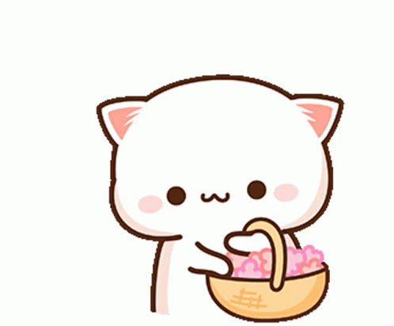
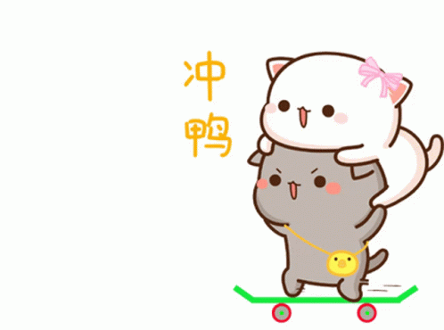

Happy Birthday
Marem
I love You!
To My Beloved Marem
Happy Birthday...
I’m writing this because sometimes, even the best video chat or even one of your hilarious texts can’t quite capture how much your friendship means to me and your smile is a radiant reflection of your kind heart and positive energy. Every moment we've shared from the silliest little things to our biggest teenage adventures has genuinely made me a better person. Thank you for always being there for me, even from a distance, and for filling my daily life with so much fun and warmth.

I still smile when I think about how we first met, all because of that editing packs giveaway LMAOOO. It’s funny how a random online things led to you tagging me in all your incredible edits, and me doing the same for you! And then there are the memories from last year, especially when fall turned into snow season you wouldn’t stop sending me pictures of the snow. Those little snapshots of your world, even from a distance, mean everything. That spirit of yours is something I’ve always admired.

I hope all your 19th birthday wishes come true. Even though we’re apart right now, please know that I am always here, cheering you on. I promise to be the reliable shoulder you can always lean on, the hand that will help you back up when you stumble, and the friend who is always ready to hear your story no matter how long or complicated it is.

Ahhh okaay this is my last sentences, I’m looking forward to all the new memories we’ll make and the next time we can celebrate together. Wishing you the happiest day! Happy Birthday, Marem!
Your faraway friend from Indonesia.
Aki 🥳